SMART is built on a series of perspectives and components that all interact with each other to produce a workflow for managing patrols and the information gathered during the patrols. Many perspectives share similar components bringing familiarity throughout the application while still providing unique functionality accessable only in that particular perspective.
<<<ADD SCREENSHOT OF FINAL OVERVIEW>>>
| SMART Component | Icon |
| Map View Perspective | |
| Patrol Perspective | |
| Query Perspective | |
| Reports | |
| SMART Plans | |
| SMART Intelligence |
The Map View Perspective is the starting point when logging into SMART. In this window will be displayed the five (5) previously loaded administrative layers in the Layers tab found on the left side of the screen. The icons above the layers list allow for reordering, restyling and zooming to the extents of the layers. In this perspective an Administrator can make changes to the default cartrography of the Conservation Area (see Creating Basemaps).
Note: Mapping windows exist in the Patrol and Query Perspectives and the map navigation for these windows are the same as the Map View Perspective.
<<<ADD SCREENSHOT OF MAP PERSPECTIVE>>>
| Moves the selected layer up | |
| Moves the selected layer down | |
| Changes the style of the selected layer | |
| Toggles whether the selected layer should be focused or not | |
| Zooms to selected layers |
Navigating in SMART's mapping window a simple process that follows many of the same procedures as other GIS applications. Users can pan around the map, zoom in/out or zoom to the full extent of the files loaded into the mapping window.
| Save a basemap | |
| Select a basemap | |
| Pan | |
| Zoom to area | |
| Zoom out | |
| Zoom in | |
| Zoom to full extent | |
| Add a layer to the map |
Setting Map Scale and Projection
At the bottom of the mapping window users can manually set the view scale and available projections.
Note: additional rojections are only availble after an Administrator has added the additional projections to the Conservation Area (see Manage Projections)
Additional spatial layers can be added to the mapping perspective to add context to the five (5) boundary files that were uploaded during the initialization of the Conservation Area.

Files - ESRI Shapefiles, ArcGrid files and various image files are all supported.
Map Decoration - North arrow, scalebar, legend and a grid are additional cartographic elements.
PostGIS - creates a connection to PostGIS for direct access from the database.
Smart Area Connection Page - opens the dialog for adding/updating the original five (5) boundary files.
Web Map Server - Adds a connection to a Web Map Server (WMS).
Web Map Server Tile Cache (WMSC) - Adds a connection to a Web Map Server Tile Cache (WMSSC).
SMART has an extensive tool set for creating custom maps with user-defined colors and labels. The Style Editor dialog allows for customization of many cartrograpic components for point, line, polygonal layers.
Style Properties
General - sets min/max viewing scale and any potential offset applied to the visualization of the layer.
Border - sets the border characteristics of the polygon.
Fill - set the internal characteristics of the polygon.
Labels - sets the labelling characteristics.
Filter - custom filters can be created to reduce unwanted features from the mapping windows.

Layers can be removed by selecting the layer and right-clicking the mouse to bring up additional functionality including Delete. Layers can also be deleted by selecting the layer and clicking "Delete" on the keyboard.
Individual layers can be exported to Shapefiles and the entire mapping window can be exported to an image file. Exporting layers or map images can be accessed through the menu File - Export Map option or by selecting a layers and right-clicking the mouse to access the Export Map functionality.
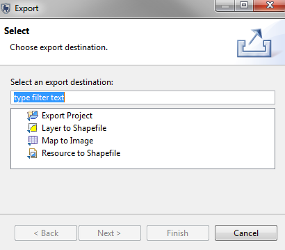
Basemaps are a saved cartographic representation that can be applied to the entire Conservation Area to provide consistency through the various perspectives. Layers, colours, labels are some of the elements that can be saved in a basemap. Multiple basemaps can be created by the Administrator which then can be later accessed by the other user level accounts.
The Patrol Perspective is where patrols are created and their associated observations are recorded. The Patrol Perspective is divided up into three parts.
Patrol List View - The list of patrols entered into the Conservation Area.
Layers - Mapping layers including the waypoints and tracks used in the mapping window.
Patrol Info Window - This is the main window where the information gathered during the patrol is accessed. At the bottom of this window will be a Summary tab showing an overview of the patrol, a tab for each day of the patrol containing the observations gathered for each waypoint and a Map tab that displays the waypoints and routes of the patrol.
<<<ADD SCREENSHOT OF PATROL PERSPECTIVE>>>
As part of the initialization process for new Conservation Areas the Administrator is required to configure various patrol parameters. Patrol Options allow for patrols edits to be permissible during a set period of time and allows for additional information to be available during the creation of patrols. This process is not a requirement during the initialization of the patrol information for the Conservation Area.
Record Distance and Direction: If checked patrols will have two extra columns to capture distance and direction offsets from captured coordinate information gathered by the GPS.
Edit Options: Indicates the number of days where the patol can be edited by non-Administrator accounts. The default of -1 specifies that the patrol will always be editable.

Patrol Mandates are a list of Mandates that are associated with each patrol. This process is not a requirement during the initialization of the patrol information for the Conservation Area.
Add: Adds new mandates to the list.
Disable/Enable: A mandate can be disabled if not currently in use but has patrols associated with it. It can later be enabled for future use.
Delete: Permanently deletes the mandate from the list. This is only possible if no patrol information is associated with it.
Note: The language is set before entering in the mandate list entries.

Patrol Types are the transportation types used by patrol teams in the Conservation Area. The base options for Patrol Types are Air, Ground and Marine. Each of these options can be disabled if not in use by the Conservation Area. The Transportation Options are the specific types of transportation for the base options of Air, Ground and Marine. To add new transportation types to the base options a base option (Air, Ground or Marine).
Add: Adds new transportation options/types to the list.
Disable/Enable: A transportation option/type can be disabled if not currently in use but has patrols associated with it. It can later be enabled for future use.
Delete: Permanently deletes the option/type from the list. This is only possible if no patrol information is associated with it.
Note: The language is set before entering in the transportation options.
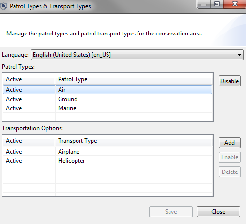
Patrol teams, their mandates and descriptions are all entered and managed in this screen. If no mandates have been created there will be no option to select from a list. This process is not a requirement during the initialization of the patrol information for the Conservation Area.
Team: The name of the patrol team.
Mandate: The mandate of the patrol team selected from the list of previously created mandates.
Description: The description of the patrol team.
Add: Adds new patrol teams to the list.
Disable/Enable: A patrol team can be disabled if not currently in use but has patrols associated with it. It can later be enabled for future use.
Delete: Permanently deletes the team from the list. This is only possible if no patrol information is associated with it.
Note: The language is set before entering in the patrol teams.
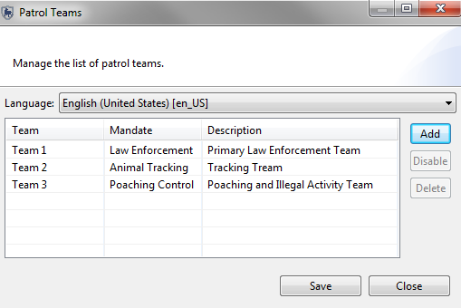
Patrols and their observations can be entered by a SMART user with appropriate permissions after the Conservation Area and Patrol properties have been completed.
The creation of a new patrol starts with selecting the "Create New Patrol" from the Patrol menu to initiate the patrol entry wizard. SMART's patrol entry wizard is designed to guide the user through the process of entering in the characteristics of the patrol.
Patrol Entry Window Steps
Multi-Leg Patrol Wizard
A multi-leg patrol occurs when a patrol group splits up into two or more groups or the patrol changes transportation or leader. A patrol split divides the a single group into two groups each with their own leader and transportation type. If a patrol requires further splitting then one of the sub-groups will require a further split. Groups can be recombined or left to complete the patrol in unique groups.

Waypoints coordinates are primarlily entered into SMART through automated processes that extract the waypoints directly from a GPS unit or through the importation of standardized GPX files. The SMART import wizard has options to automatically assign the waypoints to the correct day based on the GPS time stamp or to have the user manually assign waypoints to specific day if required. A manual option exists to enter in waypoint coordinates if the locational information was not captured by a GPS.
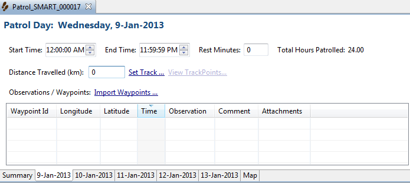
Start Time - the patrol start time for that day or leg.
End Time - the patrol end time for that day or leg.
Rest Minutes - number of minutes the patrol was resting.
Distance Travelled (km) - calculated distance of the patrol day or leg (based on GPS track information or calculated by available waypoints).
Set Track - opens the GPS track import wizard.
View TrackPoints - opens a window to view the trackpoint coordinates and timestamp.
Import Waypoints - opens the GPS waypoint wizard.
Waypoint Table Fields
WayPoint ID - Waypoint ID assigned by the GPS or by SMART if manually entered.
Longitude - Longitude coordinate captured by the GPS or entered in by the SMART user.
Latitude - Latitude coordinate captured by the GPS or entered in by the SMART user.
Time - Timestamp captured by the GPS
Observation - Clicking on the icon in the Observation cell will initiate the Waypoint Oberservation wizard
Comment - GPS entered comments are automatically brought into this field. Manual comment entry is also possible.
Attachments - File attachments are added to the waypoints by clicking the icon in this cell to open the attachment window.
The initial step after selecting the Import Waypoints is to select the import method.
GPS Import - Select this method if the GPS does not act as a mass storage device.
GPX Import - Select this method if the GPS functions as a mass storage device.
GPS Import Options
GPS Device Type - Select the GPS device and protocol.
Import All (and assign to correct day) - SMART will use the timestamp from the GPS and assign the collected waypoints to the correct date.
Import Only waypoints for <date> - SMART will import only the waypoints for the selected date.
Select which waypoints to import <date> - The SMART user will select and assign waypoints to the selected date.
select which waypoints to import

Selection of the waypoints can be done individually or through the Select All option.
GPX Import Options
Add - Opens window to allow for selection of GPX files. Files can be stored on the GPX or an independant computer.
Remove - Removes selected GPX files from the wizard.
Import All (and assign to correct day) - SMART will use the timestamp from the GPS and assign the collected waypoints to the correct date.
Import Only waypoints for <date> - SMART will import only the waypoints for the selected date.
Select which waypoints to import <date> - The SMART user will select and assign waypoints to the selected date. (see
Manual Import of Waypoints
SMART allows for the manual entry of waypoint information.
Add Waypoint - Manual entry of waypoint information.
Delete Waypoint(s) - Deletes selected waypoint(s).
Move Waypoint(s) - Reassigns the selected waypoint(s) to another day.
If track information has been captured by the GPS device the process to import the track info is the same as waypoints except the process is initiated by selecting Set Track.
Note: Tracks can be created from available waypoints if no collected GPS track information exists.
After a patrol has been created and the waypoints imported the next step is to enter in the observations collected during the patrol.
The process begins by clicking on the button in the Observation column. This button will launch the Waypoint Observation entry wizard.
After a patrol has been created and contains waypoint and/or track information the SMART user can use the map tab (lower right) to view the track and waypoint information.
Navigation of the map will be the same as with the Mapping Perspective window. The only addition is the information icon [ ]. By selecting this tool and then clicking overtop of a map element SMART will open up a window displaying the attribute information associated with that feature.
Data entry in SMART is designed to be distributable. Multiple SMART users can enter in patrols and associated observations on multiple computers and expor the patrol after the information has been entered. The patrol is exported in an XML structure and contains the attached files (if any). This XML package can be later imported into a different computer.

Browse - Use to select the location of the exported patrols.
Include Attachments - If selected the patrol exports will include any attachments associated with the waypoints.
Patrol Filter - By default only the last 20 patrols are shown in reverse order. If more patrols are required click the "here" link to show all patrols.
Select All - Patrols can be selected individually or all at once by clicking Select All.
De-Select All - This button will de-select all previously selected patrols.
Export - Completes the patrol export process.
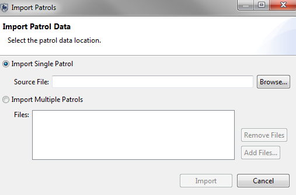
Browse - Imports a single patrol file.
Add Files - Allows for selection of multiple patrol files.
Remove Files - Removes unwanted patrol files from the import process
Import - Completes the patrol import process.
The Query Perspective is where the majority of the analytical capabilities of SMART is found. Queries can be created, run, saved and exported/imported. The results from the queries can be viewed directly in the Query Perspective or exported for use in other software applications.
The SMART query perspective shares the same basic framework for all query types. Individual components of the four query types will vary depending on which query is chosen.
Note: Patrol and Waypoint queries share all the same components with each other and many of the same components as Summary and Grid Queries.
A SMART query is a logical expression used to filter the entries in the database. SMART has four query types (waypoint, patrol, summary, and grid)
Displays the raw observation records that are selected using filters allowing users with no summarizing (totals, etc.). Queries can be viewed in tables or on a map.
Example: Show me all waypoints for Patrol ID 1021
| Patrol ID | Patrol Leg | Patrol Date | Time | Observation Type |
| 1021 | 1 | Nov 3, 2011 | 9:34 | Human Activity |
| 1021 | 1 | Nov 3, 2011 | 10:23 | Animals |
Displays the patrols that were selected using the query filters. Waypoint observations are not displayed in the results nor are any summaries. Queries can be viewed in tables or on a map.
Example: Show me all patrol that encountered an elephant carcass
| Patrol ID | Patrol Leg | Patrol Date | Time |
| 101 | 1 | Nov 3, 2011 | 16:34 |
| 103 | 1 | Nov 7, 2011 | 10:23 |
A summary summarizes the raw data and allows for grouping into different categories. Items that can be summarized are values such as total number of patrols, the total distance travelled, the total number of snare observations, etc. Groupings are categories such as management sectors, patrol types, patrol mandates, stations, teams, etc. Summaries can only be viewed as tables. Results are displayed only in tables.
Example: Show me the total number of snares observed in each management sector for each of the last 6 months.
| January | February | March | April | May | June | |
| # of Snares | # of Snares | # of Snares | # of Snares | # of Snares | # of Snares | |
| Sector A | 7 | 6 | 3 | |||
|---|---|---|---|---|---|---|
| Sector B | 15 | 10 | 2 | 19 | 5 | 3 |
Results are displayed in a user specified grid (raster) format with aggregated results based on the defined grid size. Results are displayed in maps or in tables or on a map.
Example: Show me how many patrols were in each grid
| Tile X ID | Tile Y ID | Value |
| -12358 | 4839 | 4 |
| -12356 | 4838 | 2 |
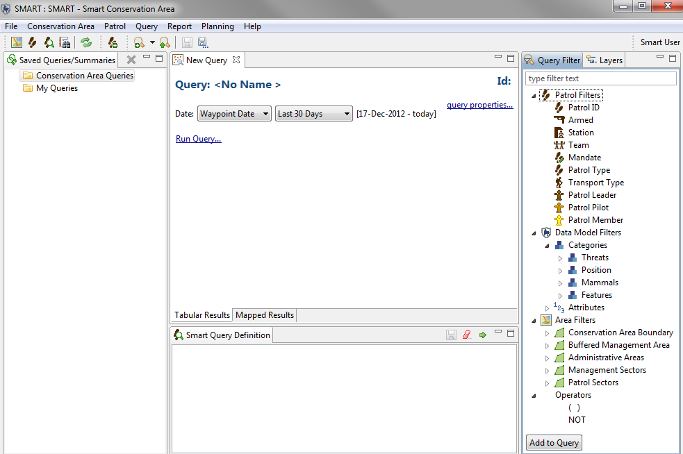
| Icon or Link | Description |
| Filters the date of the query | |
| Used to change the name of the query | |
| Changes the name of the query. Filters the fields returned in the query results | |
| Switches between tabular results and mapping results | |
 |
Location of saved queries and summaries. By default there are two
folders (Conservation Area Queries & My Queries).
Any account can save into My Queries but are only accessible to the user account that created them. Only Manager and Admin accounts can save in the Conservation Area Queries folder. |
| Used to filter the results based on patrol information | |
| Used to filter the results based on categories and attributes in the data model | |
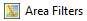 |
Used to filter the results based on the spatial boundaries of the Conservation Area |
 |
Operators of NOT and Brackets () used to change the logic of the query |
| Launches the query | |
| Clears the query | |
| Saves the query | |
| Tab containing the components used to build up the query or summary. | |
| Tab containing the map layers. | |
| Window where the query or summary is constructed, erased, run and saved |
The basic workflow to create queries is the same for all types of queries but does vary depending on which type of query is being constructed.
Filter Types
Patrol - characteristics used when defining the patrol (station, team, members, etc…)
Data Model - components from the Conservation Area data model. Data model categories or attributes can be selected.
Area – allows for spatial filtering of the patrol based on the five default Conservation Area boundaries.
Operators – are used to alter the logic of the query to allow SMART users to be able to build more complex queries.
Operators include:
| Query Definition | Description | Filters Used |
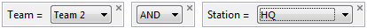 |
All patrols or observations led by Team 2 that left from HQ Station. | Patrol |
| All patrols or observations where Roger Barrett was the patrol leader. | Patrol | |
| All patrols of observations recorded in the category (or sub-categories) of Biological - Resource Use - Logging & Wood Harvesting. | Data Model - Categories | |
| All of the Threats under the category Biological Resource Use but not Gathering Terrestrial Plants. | Data Model - Categories | |
| Selects all patrols or observations that encountered a Sumatran Tiger regardless of which category it was recorded in. | Data Model - Attribute (global) | |
| Selects all patrols or observations that confiscated a dead Sumatran Tiger from the parent category of Hunting and Collecting Terrestrial Animals | Data Model - Attribute (category specific) | |
| Selects all patrols or observations that occured in the East Administrative Area | Area | |
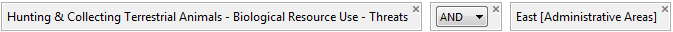 |
All patrols or observations that encountered a Hunting and Collecting Threat and occured in the East Administrative Area. | Data Model - Category & Area |
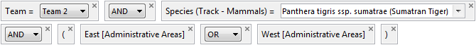 |
All patrols or observations by Team 2 that encountered Sumateran Tiger tracks in the Administrative Areas of East or West | Data Model - Attribute (category specic) & Patrol & Area |
Summary Query Overview
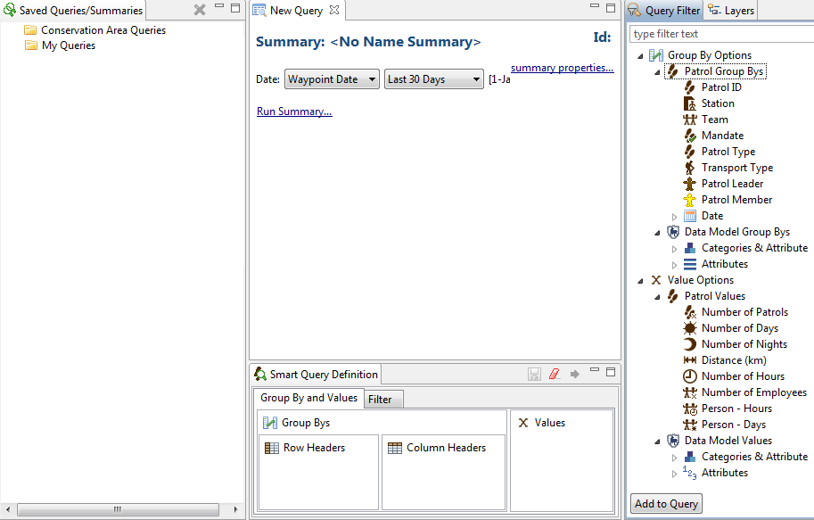
| Icon or Link | Description |
|
|
| QUERY DEFINITION | DESCRIPTION | FILTERS USED |
Creating Summaries
Summaries are built up using Value Options which can be of the type Patrol or Data Model. These values can then be grouped by Patrol or Data Model characteristics. Summaries produce tabular results with no mapping or spatial component.
<<INSERT SUMMARY OVERVIEW IMAGE>>
Group By Options
Patrol Group By – aggregations of values based on patrol characteristics
Data Model Group Bys - aggregations of values based on data model entries.
Value Options
Patrol Values – inserted to find out values associated with patrol
Data Model Values - inserted to find out values associated with data model observations
SMART summaries can be formatted in different ways using the Row or Column Header windows.
Row Headers – Values inserted into Row headers will return results with the Group By or aggregated entries appearing along the left most column resulting in a table with multiple rows.
Column Headers – Values inserted into Column headers will return results with the Group By or aggregated entries appearing along the top most row resulting in a table with multiple columns.
X Value – Location where the values for the summary are placed.
Note: more than one entry can be entered into the Values or Group By windows but not all combinations are permissible if they break logical groupings.
Examples of Summaries